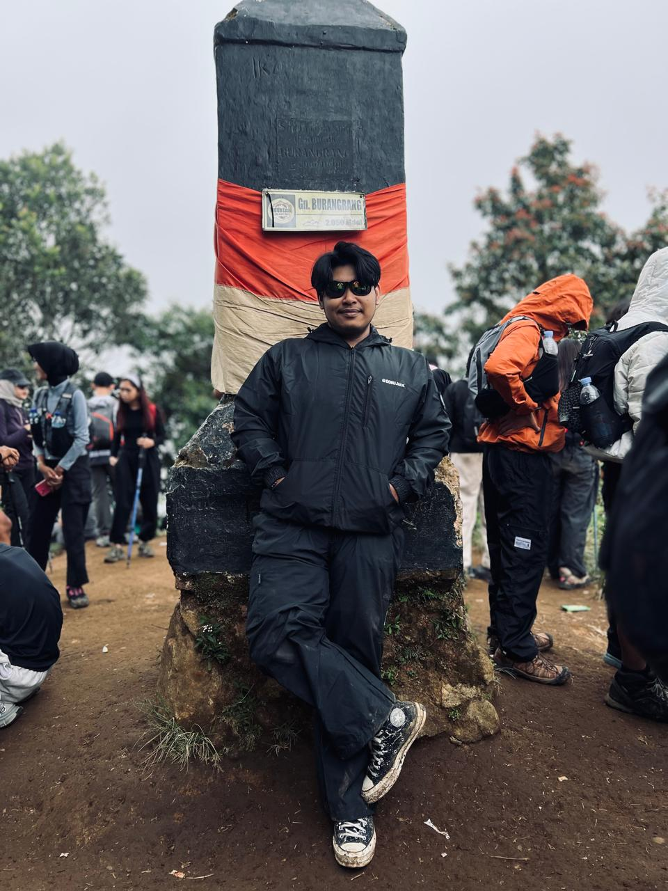

<section id="about" class="section">
    <div class="container">
        <div class="section-header">
            <h2 class="section-title"><span class="title-kanji">自己</span><span class="title-text">About Me</span></h2>
            <p class="section-subtitle">私について</p>
        </div>
        <div class="about-grid">
            <div class="about-text">
                <h3>Hello, I'm Andreas Pangjiashun</h3>
                <p>Fresh Graduate from SMK Ananda Bekasi, majoring in Computer and Network Engineering (TKJ), graduated
                    in 2023. Currently active student at Telkom University Bandung, pursuing Bachelor's degree in
                    Computer Engineering.</p>
                <p>Hands-on experience in administration, organizational leadership, cloud computing, AI basics, and
                    computer vision. Passionate about technology and eager to apply knowledge in real-world projects.
                </p>
                <div class="about-goal"><i class="fas fa-bullseye"></i>
                    <p><strong>Goal:</strong> becoming a skilled Computer Engineer who contributes to innovative tech
                        solutions while continuously growing.</p>
                </div><a href="https://www.linkedin.com/in/andreas-pangjiashun-8b5b702b5" target="_blank"
                    class="btn btn-primary"><i class="fab fa-linkedin"></i> View LinkedIn</a>
            </div>
            <div class="about-image">
                <div class="image-frame"><span
                        class="frame-corner frame-top-left"></span><span
                        class="frame-corner frame-top-right"></span><span
                        class="frame-corner frame-bottom-left"></span><span
                        class="frame-corner frame-bottom-right"></span></div>
            </div>
        </div>
    </div>
</section>